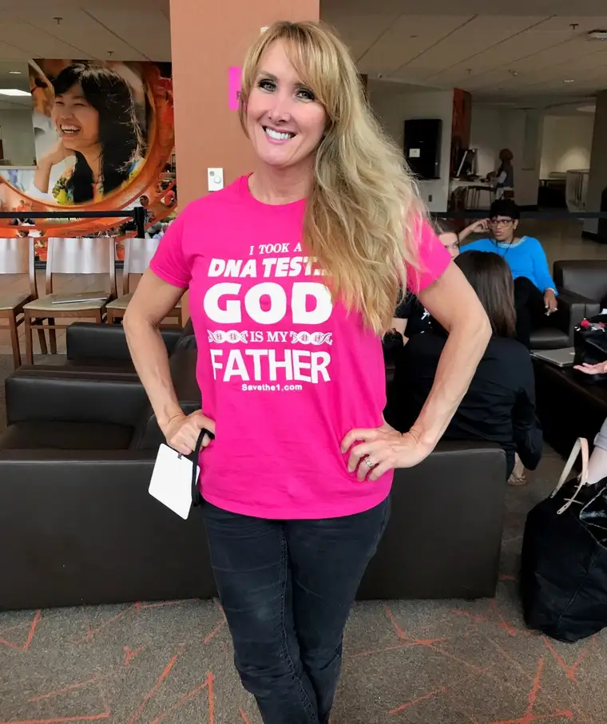

It’s perhaps the quickest way to silence a sidewalk advocate: “I was raped.”
What can one say to such a statement uttered near the door of an abortion facility?
Those of us who pray for the women who approach our state’s only abortion facility face an extreme time limitation. We discern as well as we can, with sparse information and moments to spare, what words might help. We can easily, humanly miss the mark.
When a woman says she’s been raped – and on occasion, they do – a fitting response can be especially challenging.
We might even question it. After all, some women have said, “I’m not going in there,” but duck inside at the last minute. Others say they’re there for another reason, but it’s hard to imagine choosing to walk past escorts and prayer advocates for a service that can be done elsewhere.
Some likely have been raped by a stranger or someone they know. In either case, the potential client already has been victimized. And it’s hard to know how to reach her heart with mercy while also helping her see that, in the violent act of abortion, she’ll be victimized again.
One young woman who didn’t push us aside on her way into the facility listened to our offers of hope. After saying she agreed with our position, she paused slightly before adding, “But the thing is, I was raped, so I have to do this.”
In the moment of heavy silence that followed, I wanted so much to be able to bring her the story of Rebecca Kiessling. As stated on her website, rebeccakiessling.com, Kiessling was conceived in rape when her biological mother was held by knifepoint by a serial killer.
She was born a few years before the Roe v. Wade Supreme Court case which made abortion lawful across our land, so legal abortion wasn’t an option. Though Kiessling later learned that her biological mother did try to abort her in a back-alley operation, the filth she witnessed there made her flee.
Recently, I had a chance to talk with Kiessling. What struck me most were her beautiful, sparkly blue eyes and wide, easy smile. Her T-shirt, which read, “I took a DNA test…God is my Father,” made me grin.
As part of a “100 percent” pro-life ministry, Save The 1, Kiessling helps protect, support and empower women who become pregnant by rape and their children conceived in rape, as well as those given a poor prenatal diagnosis.
The day of our meeting, she shared how she’d become a mentor to Abby Johnson, former Planned Parenthood manager, just after she’d left the abortion industry, to help educate Johnson on issues like the “rape exception” that many, even some pro-lifers, embrace.
Kiessling stands as a living witness making a case against this exception, imploring those who buy into what she calls illogical to rethink their position.
“Abby once told me that while working for Planned Parenthood, there was this weird dichotomy,” Kiessling noted, “because in the rest of society, a child conceived in rape was devalued, but in an abortion clinic (their remains) had the highest value…you had to take special care of the remains of children conceived in rape.”
“The other thing she told me,” Kiessling said, “is that she always knew that rape victims would be worse off… she knew (abortion) wouldn’t bring about healing but would bring more violence to their bodies.”
Talking to Kiessling was an extraordinary gift, considering what she represents – the living, loving, logical response to the words, “I was raped.”
Though reaching potential abortion clients with her story remains a conundrum, at the very least, in those moments in which it’s relevant, I can hold the visual of her beautiful face in my mind and heart.
It’s easy to buy into something in theory, and much harder to do so when you are facing the very person who would have been erased by it. Or, as Kiessling says on her website: “It’s like saying, ‘If I had my way, you’d be dead right now.’…and I can tell you that it hurts.’”
Though most don’t put a face to the issue, she said, it’s something she, through her life and God’s grace, has been gifted to do.
Maybe through the mere reminder of people like Kiessling, the right words will eventually come in that most crucial moment. And maybe I – or you, or someone you know – remembering Kiessling, can help another little Rebecca experience the wondrous life God made them to have.
[Note: I write about my experiences on the sidewalk Downtown Fargo on Wednesday, the day abortions happen at our state’s only abortion facility, for New Earth magazine — the official news publication of the Fargo Diocese. I hope you find “Sidewalk Stories” helpful in understanding the truth about abortion and how it plays out tragically each week here in Fargo, N.D. The preceding ran in New Earth’s June 2018 ssue.]